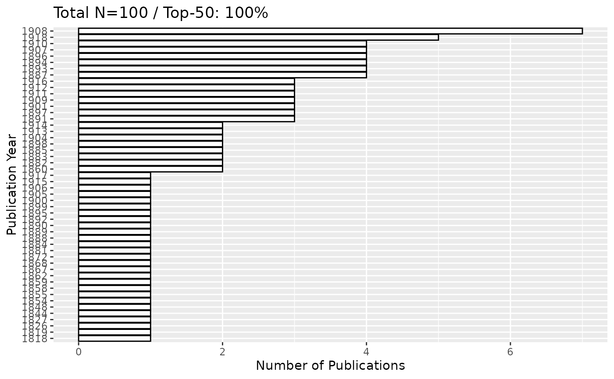

Fennica
To search Fennica data in Finna
N.B In the search_finna() default limit of 100 records is being used. Specify ‘limit’ argument for more records.
library(finna)
fennica <- search_finna("*",filters=c('collection:"FEN"'))
print(fennica)## # A tibble: 100 × 10
## id Title Author Year Language Formats Subjects Library Series
## <chr> <chr> <chr> <chr> <chr> <chr> <chr> <chr> <chr>
## 1 3amk.39381 Teknolo… Markk… 2003 fin Kirja,… teknolo… 3AMK-k… Edusk…
## 2 3amk.55142 Työsuoj… Sanas… 2006 fin Kirja,… Diction… 3AMK-k… TSK, …
## 3 3amk.62039 Terveyd… Kiisk… 2008 fin Kirja,… alkohol… 3AMK-k… Sosia…
## 4 3amk.62695 Nuorten… Rimpe… 2007 fin Kirja,… altistu… 3AMK-k… Sosia…
## 5 3amk.66893 Mahdoll… Holma… 2008 fin Kirja,… Turun a… 3AMK-k… Turun…
## 6 3amk.69050 Pysytää… Suomi… 2008 fin Kirja,… vajaaku… 3AMK-k… Sosia…
## 7 diana.90230 Tulevai… Lampi… 2009 fin Kirja,… kotital… Diakon… Opetu…
## 8 3amk.70767 Kaupunk… Laine… 2009 fin Kirja,… kaupunk… 3AMK-k… Tutki…
## 9 diana.96117 Suomala… Helak… 2011 fin Kirja,… terveys… Diakon… Rapor…
## 10 anders.1286609 Sosiaal… Niira… 2012 fin Kirja,… sosiaal… Anders… Acta …
## # ℹ 90 more rows
## # ℹ 1 more variable: last_indexed <chr>Bulk data
In order to download the whole data we can add the parameter
limit = Inf as
search_finna("*",filters=c('collection:"FEN"'), limit = Inf)
19th century fennica data
search the whole data and it total search of counts in the the interval between some years for example between the years 1809-1917 as follows:
library(finna)
fennica <- search_finna("*",filters = c('collection:"FEN"', 'search_daterange_mv:"[1808 TO 1918]"'))
print(fennica)## # A tibble: 100 × 10
## id Title Author Year Language Formats Subjects Library Series
## <chr> <chr> <chr> <chr> <chr> <chr> <chr> <chr> <chr>
## 1 aalto.9926263844… Suom… Tie- … 1911 fin Kirja,… NA Aalto-… NA
## 2 jykdok.750037 Tiet… Schvi… 1893 fin Kirja,… NA Jyväsk… Suome…
## 3 jykdok.724878 Förh… NA 1892 swe Kirja,… naisasi… Jyväsk… NA
## 4 helka.9911841543… Suom… NA 1890 fin Kirja,… arkeolo… Helka-… Suome…
## 5 jykdok.1925462 Boun… Appel… 1891 fin Kirja,… NA Jyväsk… NA
## 6 helka.9912014063… Laus… Jutei… 1844 fin Kirja,… NA Helka-… NA
## 7 helka.9920831553… Halt… NA 1881 fin Kirja,… NA Helka-… NA
## 8 helka.9914651535… Kesä… L. W.… 1898 fin Kirja,… arkeolo… Helka-… Suome…
## 9 helka.9990537535… Enum… Lindb… 1901 lat Kirja,… saniais… Helka-… NA
## 10 jykdok.749728 Voly… Neovi… 1893 swe Kirja,… NA Jyväsk… NA
## # ℹ 90 more rows
## # ℹ 1 more variable: last_indexed <chr>we can check the whole data count
library(finna)
fennica <- search_finna("*",filters = c('collection:"FEN"', 'search_daterange_mv:"[1809 TO 1918]"'))
result_count <- attr(fennica, "result_count")
print(result_count)## [1] 56324Visualization for fennica
We can use any of the functions provided to visualize the data
library(finna)
fennica <- search_finna("*",filters = c('collection:"FEN"', 'search_daterange_mv:"[1809 TO 1918]"'))
refined_data <- refine_metadata(fennica)
library(finna)
library(ggplot2)
fennica <- search_finna("*",filters = c('collection:"FEN"', 'search_daterange_mv:"[1809 TO 1918]"'))
refined_data <- refine_metadata(fennica)
top_plot(refined_data, field = "Year") +
xlab("Publication Year") + # Custom X-axis label
ylab("Number of Publications") # Custom Y-axis label
Notes:
- Filters: The filters need to match the exact field names used in Finna’s API. You can find these field names in the API documentation or by looking at the response from the API here.
- Call Number Search: Ensure that the call numbers are correctly formatted according to the library’s classification system (e.g., YKL in Finland).
This way, you can extract specific metadata like authors, publication
years, and call numbers using the search_finna
function.